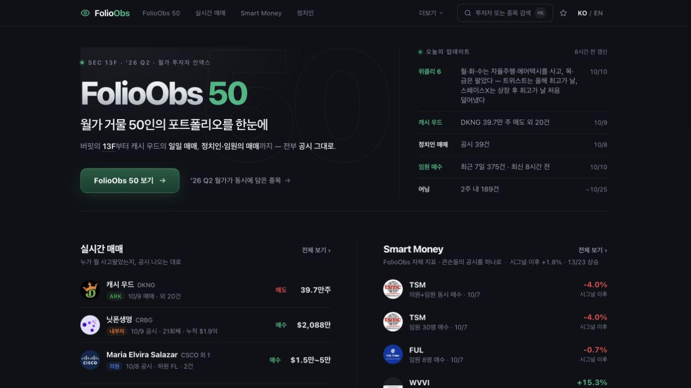
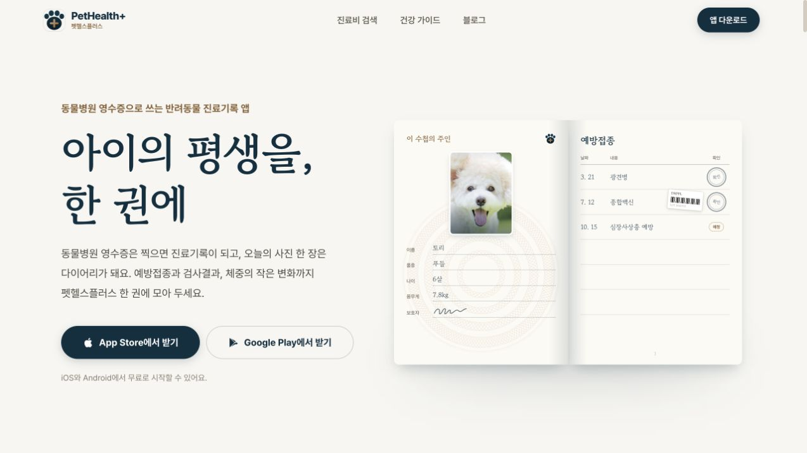
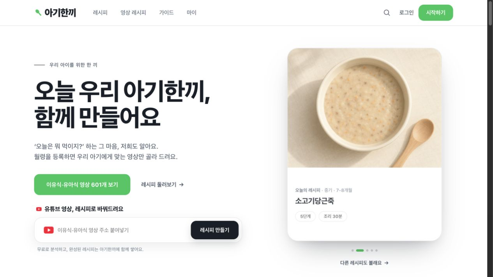
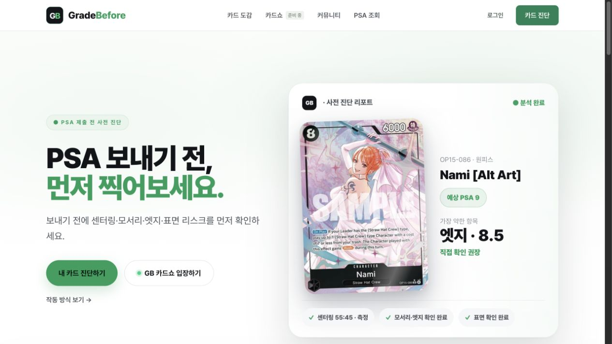

FolioObs
투자자의 움직임을, 공시에서 읽습니다.
주요 투자자의 보유 종목과 변화를 공시 기준으로 살펴봅니다. 분기별 13F, ARK 일별 매매, 내부자·정치인 거래를 모아 투자 리서치의 출발점을 제공합니다.
분기별 보유 현황 · 공시 기반 매매 내역
투자자 포트폴리오 보기FolioObsWEB

투자 공시보유 종목과 매매 흐름
공시 시점과 보고 주기를 기준으로 보는 투자 정보
투자 · 반려동물 돌봄 · 아이의 식사 · 카드 수집
투자자의 움직임을, 공시에서 읽습니다.
주요 투자자의 보유 종목과 변화를 공시 기준으로 살펴봅니다. 분기별 13F, ARK 일별 매매, 내부자·정치인 거래를 모아 투자 리서치의 출발점을 제공합니다.
분기별 보유 현황 · 공시 기반 매매 내역
투자자 포트폴리오 보기
투자 공시보유 종목과 매매 흐름
공시 시점과 보고 주기를 기준으로 보는 투자 정보
영수증에서 시작하는 반려동물 건강 이력.
영수증, 검사결과, 접종 일정과 체중을 한곳에 모읍니다. 병원에 갈 때 지난 기록을 꺼내 보고, 가족과 같은 정보를 공유할 수 있습니다.
영수증 기록 · 진료 요약 · 가족 공유
앱과 주요 기능 보기
진료 영수증·건강 서류다시 꺼내 보는 진료 이력
지난 진료부터 다음 접종까지, 보호자가 이어 가는 기록
요리 영상에서 재료와 조리 순서까지.
아이의 월령과 재료에 맞는 이유식·유아식 영상을 찾습니다. 영상의 재료와 만드는 순서를 정리해, 식사 준비 중에도 필요한 내용을 바로 확인합니다.
월령·재료별 탐색 · 영상 레시피 정리
영상 레시피 둘러보기
이유식·유아식 영상재료와 조리 순서
원본 영상과 출처를 함께 확인하는 레시피
감정에 보내기 전, 카드 상태부터.
사진에서 센터링과 모서리, 엣지, 표면을 점검합니다. 자동 측정과 직접 확인을 거쳐 예상 등급을 살펴보고, 공식 감정에 제출할지 판단할 때 참고합니다.
사진 기반 상태 점검 · 비공식 사전 진단
카드 진단 살펴보기
카드 앞·뒷면 사진제출 전 상태 리포트
항목별 점검과 예상 등급을 제공하는 비공식 진단
Engineering in practice
DATA · RECOGNITION · PRODUCT ENGINEERING
공시, 문서, 영상, 이미지. 서로 다른 형식의 데이터를 읽고 구조화하는 기능을 개발합니다.
분석 결과를 비교·기록·점검할 수 있는 사용자 기능으로 연결하고, 웹과 모바일에서 직접 서비스합니다.
| 핵심 기술 | 제품에 구현한 기능 | 운영 제품 |
|---|---|---|
| 01 데이터 수집·분석SEC 13F · ARK 매매 공시 | 공시 집계 · 보유 현황 분석 · 변화 비교공시 기준의 보유 종목과 매매 흐름을 함께 조회 | FolioObs |
| 02 문서 인식·분류동물병원 영수증 · 진료기록 | 영수증 항목 추출 · 진료 기록 분류병원·날짜·항목·금액을 기록하고, AI로 쌓인 기록과 챙길 일을 요약 | 펫헬스플러스 |
| 03 콘텐츠 구조화이유식 · 유아식 조리 영상 | 재료 · 분량 · 조리 순서의 구조화영상의 내용을 출처와 함께 확인하는 레시피로 정리 | 아기한끼 |
| 04 이미지 분석·측정트레이딩 카드 앞·뒷면 사진 | 외곽 인식 · 기울기 보정 · 센터링 측정자동 측정과 직접 확인을 결합한 비공식 상태 리포트 | GradeBefore |
기능 설계와 데이터 처리, 웹·모바일 개발을 하나의 흐름으로 연결합니다.
네 가지 제품을 직접 운영하며, 실제 사용 과정에서 필요한 기능을 계속 다듬습니다.
03 / CONTACT